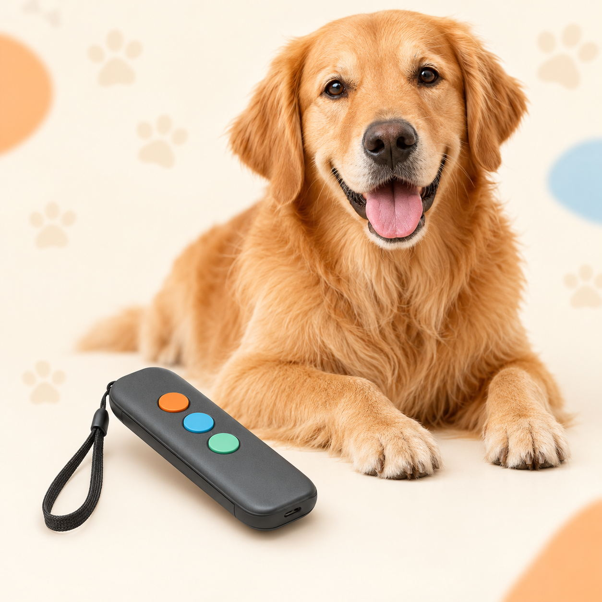
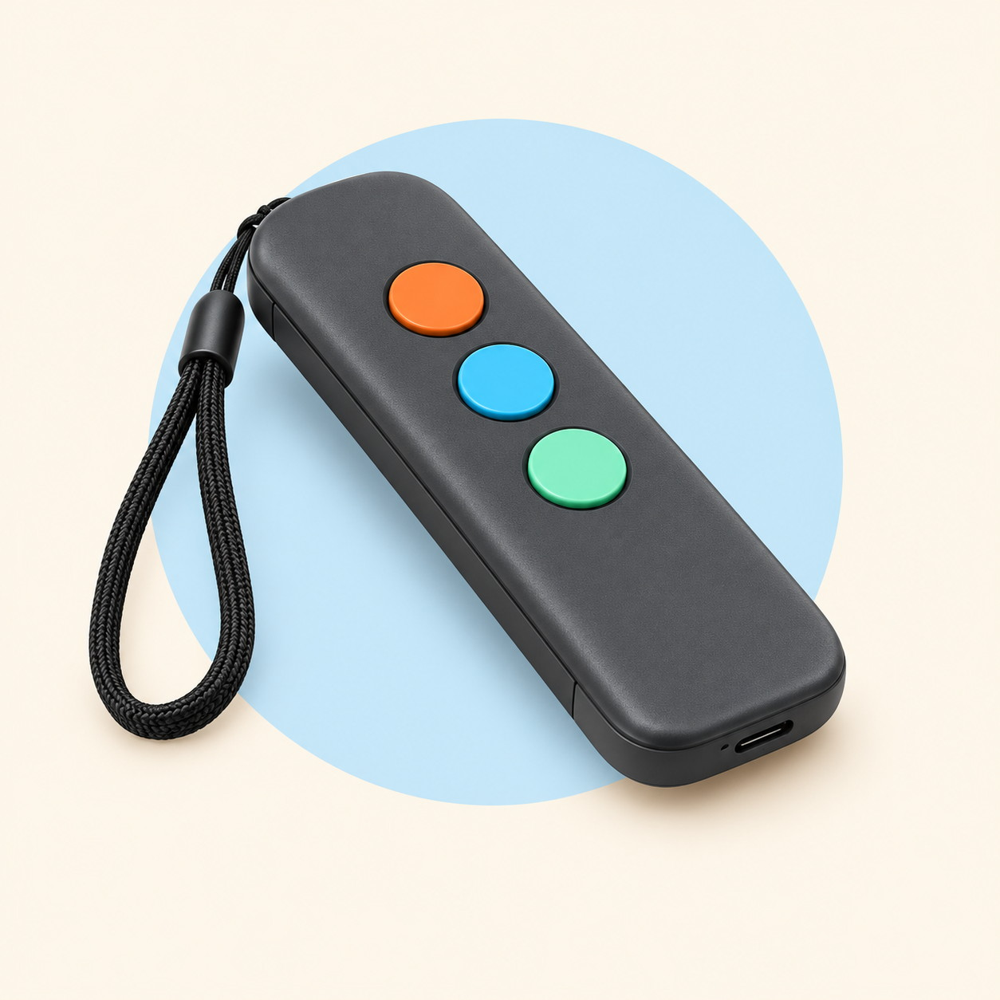
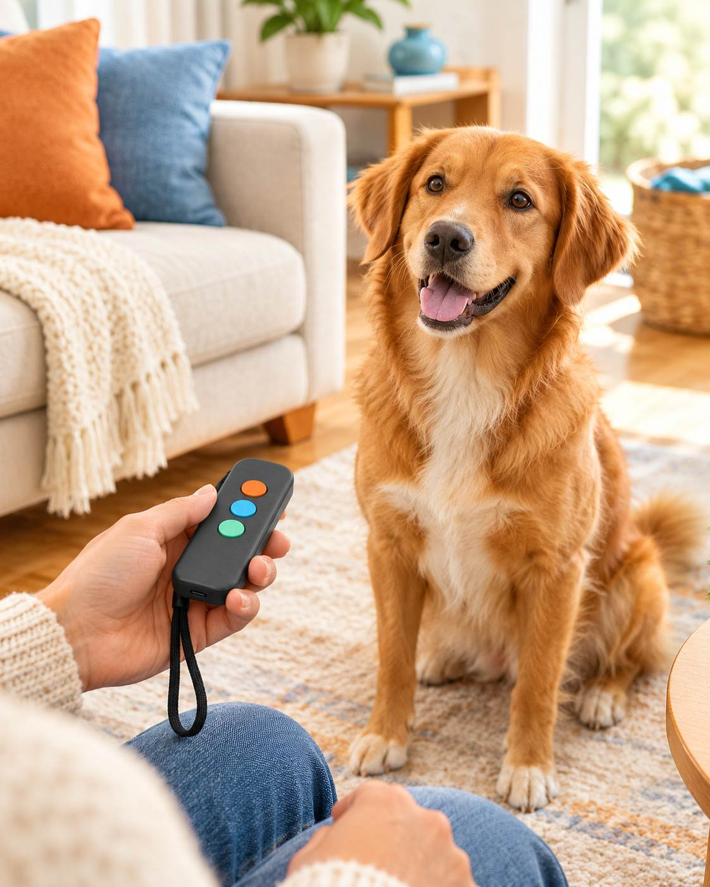

If you've ever stood in your own living room shouting "QUIET!" at a dog who has absolutely no intention of listening, grab a coffee. I've been there, and I found something that actually helped.

None of that makes you a bad owner. It just means nobody ever showed you the trick. Dogs don't respond to volume. They respond to a clear, instant interruption.
Here's the thing I wish someone had told me sooner. A barking dog is usually a dog who's wound up and can't snap out of it. Shouting adds fuel. What actually works is something that cuts through the excitement for a split second, so your dog's attention swings back to you.
And the moment their attention is back on you, that's when you can teach them something.
You don't need a louder voice. You need a better interrupter — something your dog notices instantly that doesn't involve you losing your cool.
It's called a handheld ultrasonic bark trainer: a small, torch-sized gadget. You point it at your dog, press the button, and it gives off a high-pitched tone that you can't really hear, but your dog definitely can. No shock. No spray. No yelling.
It's built to give your dog immediate feedback in the exact moment the barking (or jumping, or counter-surfing) is happening, so the message actually lands. Most of us never manage that timing with our voices.

And it's not just for barking. The same press-and-redirect approach is used for jumping up on people, counter-surfing, and other pushy habits that drive you up the wall. One tool, a handful of annoying behaviors.
The gadget helps most when you use it with a little training, not instead of it. Here's the simple routine:
"Sit" works perfectly. Grab a few small treats your dog loves.
When your dog follows through, praise them, pet them and give a treat. Your dog starts linking the sound with "pay attention, good things happen."
Before long, your dog starts responding to the sound before you say a word. That's the breakthrough moment.
Say your cue word ("quiet" works nicely). If the barking continues, press the button. When your dog stops and looks at you, reward them straight away.
One pro tip: keep the device low-key and out of sight when you press it, so your dog doesn't link the correction to you or to the object itself. The aim is a quick "huh, what was that?" that snaps their focus back, followed by lots of praise.
From what I've seen, the first press is usually the most dramatic one. It tends to cut through the excitement, and the dog's head whips round and the focus switches to you. For hyper dogs who "can't turn it off" after playtime, that pause is often the missing piece. Owners also like that they can carry it on walks and quiet a pup who wants to bark at every passing dog.
Dogs that were jumping on guests or going wild over the doorbell often settle into a "sit, stay and wait for the praise" routine much faster once there's a consistent interrupter in the mix.
No gadget is magic, and every dog is different. Consistency and rewards matter more than any device. Ultrasonic tools also rely on your dog being able to hear them, so if your dog has hearing loss, it won't do much.
But as a calm, no-drama starting point for a barking habit? It's one of the easiest things I know to try.
There are loads of these on Amazon, from tiny pocket-sized ones to longer-range models, and they all look pretty similar at first glance. Here's what I'd check:

You don't need to shout, and you don't need a dog whisperer. A clear interruption, a bit of consistency and plenty of praise go a long way. If I were you, I'd give it a go.
Browse Them On AmazonDisclosure (Ad): As an Amazon Associate, we earn from qualifying purchases made through links on this page. This doesn't affect the price you pay. Results vary from dog to dog. This page is for general information only and isn't veterinary or professional behavior advice. If your dog's barking is sudden, extreme or linked to aggression or anxiety, please talk to your vet or a qualified trainer.